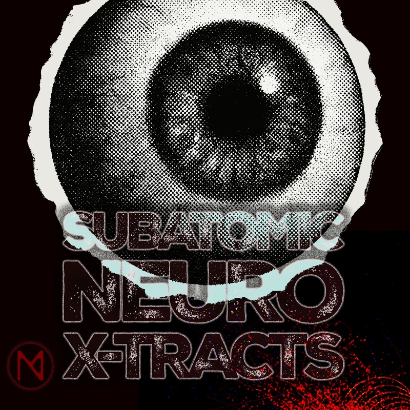

Audio tools, built from first principles.
FX-Mechanics = physical-modelling synths, spatial-audio tools and DSP-driven effects, alongside music projects of Olivier Doaré.

Y'n'N — H2O2: Subatomic Neuro X-tracts
Mastered by massivebass.tv and released worldwide by Warner Chappell PM Germany.
FX-Mechanics
A one-person studio building audio plugins rooted in physical modelling, room acoustics and signal processing research, alongside original electronic and noise music.
This practice also feeds, and is fed by, academic research: I'm a lecturer and researcher in acoustics at ENSTA Paris, where structural vibration, wave propagation and signal processing meet sound design and composition. The tools developed here are born at that intersection: built for the lab and the listening room, and just as at home in a mixing or mastering studio, or a home studio.